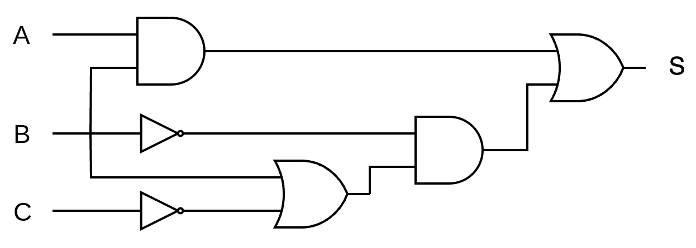
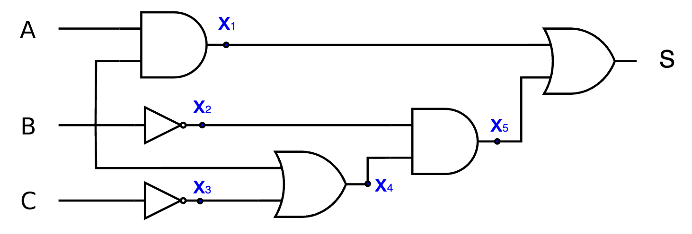

Son aquellos circuitos que se construyen con las puertas lógicas descritas anteriormente. Se les llama combinacionales porque la salida depende únicamente de las distintas combinaciones entre las entradas y no de estados anteriores ni del tiempo.
El diseño de circuitos combinacionales implica varios pasos que se centran en definir la función de salida deseada y luego implementar esa función utilizando componentes lógicos. Los pasos típicos en el diseño de circuitos combinacionales son los siguientes:
- Requisitos del sistema: comprender completamente los requisitos del sistema y las especificaciones de entrada/salida. Esto implica identificar las señales de entrada, las señales de salida y las relaciones lógicas entre ellas. Esta etapa es crucial y será posiblemente la parte más complicada a la hora de resolver los problemas de circuitos combinacionales. Es importante entender perfectamente los enunciados y ser metódicos para tener en cuenta todas las posibilidades.
- Tabla de verdad: crear una tabla de verdad que muestre todas las posibles combinaciones de entrada junto con los valores de salida correspondientes. Si se ha realizado correctamente el paso anterior, esto será una simple formalidad.
- Expresión algebraica booleana: utilizando la tabla de verdad, desarrollar una expresión booleana que describa la función de salida en términos de las señales de entrada. Esto suele implicar simplificar la expresión booleana utilizando técnicas como el álgebra booleana o mapas de Karnaugh. Lo más normal será usar el método de Karnaugh, pues ya contaremos con la tabla de verdad del problema.
- Diagrama del circuito lógico: utilizar la expresión booleana simplificada para diseñar un diagrama de circuito lógico que represente la función de salida deseada. Esto implica seleccionar y conectar componentes lógicos como puertas AND, OR, NOT, XOR, etc., según sea necesario para implementar la función lógica. En el caso de resolución de problemas en este curso, normalmente podremos diseñarlo todo usando solo las puertas lógicas básicas (AND, OR y NOT) siguiendo simplemente el orden de operaciones que nos dicte la expresión algebraica, aunque es posible que tengamos que usar solo puertas NAND (o solo puertas NOR) si el problema nos lo indica.
- Simulación y verificación: utilizar herramientas de simulación para verificar el diseño del circuito combinacional y asegurarse de que produce los resultados esperados para todas las combinaciones de entrada posibles. Haremos algunas prácticas en las que simularemos nuestros circuitos una vez diseñados usando diferentes herramientas.
- Implementación física: una vez que el diseño ha sido simulado y verificado, se procede a la implementación física del circuito combinacional utilizando componentes electrónicos reales, como transistores, resistencias, circuitos integrados con puertas lógicas, etc. Esto puede implicar diseñar una placa de circuito impreso (PCB) o integrar el diseño en un chip de silicio, según sea necesario. Nosotros en el instituto podríamos diseñar y construir una PCB, pues es una tecnología que puede realizarse de forma "artesanal", pero no implementar un diseño en chip de silicio, para lo que se necesitan grandes instalaciones industriales.
Ya sabemos hacer muchas de las fases del diseño de circuitos combinacionales. En lo que queda completaremos lo que necesitamos para resolver completamente problemas de circuitos.
Obtención de la función lógica de un circuito combinacional dado
Dado un circuito combinacional, podemos obtener su función lógica directamente siguiendo las salidas de cada puerta. Para hacer el proceso lo más metódico posible y evitar en la medida de lo posible errores, identificaremos la salida de cada puerta lógica con una variable booleana Xi e iremos dándoles valores por orden hasta obtener la expresión final de la salida S.
Vamos a resolver un ejemplo para comprender mejor la metodología.
Ejemplo resuelto
Dado el siguiente circuito combinacional:

Obtener la expresión algebraica de su función lógica.Primero asignamos una variable booleana Xi a la salida de cada puerta lógica del circuito (la salida de la última puerta ya es "S", por lo que no hace falta asignarle ninguna Xi):

Escribimos la expresión lógica de cada Xi según las entradas de sus puertas:
- X1 = A · B
- X2 = B
- X3 = C
- X4 = B + X3
- X5 = X2 · X4
- S = X1 + X5
Para obtener la expresión final de S, tan solo nos queda ir sustituyendo cada expresión Xi por su valor:
S = X1 + X5 = A · B + X2 · X4 = A · B + B · (B + X3) = A · B + B · (B + C)
Obtención de la tabla de verdad de un circuito combinacional dado
Para obtener la tabla de verdad de un circuito combinacional dado, podríamos obtener primero la expresión booleana del circuito, como vimos en la sección anterior, y después obtener la tabla de verdad a partir de ella con alguno de los métodos que vimos en el apartado 2 (funciones lógicas).
Sin embargo, hay una forma más sencilla de obtener la tabla de verdad directamente, utilizando las variables lógicas intermedias Xi que ya utilizamos en la sección anterior. Como cada Xi tiene una expresión muy simple, es sencillo y rápido ir calculando sus valores para cada fila de la tabla de verdad. Una vez se tengan todas calculadas, será igual de sencillo calcular la salida "S".
Como antes, lo veremos más claro con un ejemplo. Utilizaremos el mismo circuito de antes.
Ejemplo resuelto
Dado el siguiente circuito combinacional:
Obtener su tabla de verdad.
Como hicimos antes, asignamos una variable booleana Xi a la salida de cada puerta lógica del circuito:
Escribimos la tabla de verdad, incluyendo una columna para cada una de las Xi:
| A | B | C | X1 | X2 |
X3 |
X4 |
X5 |
S |
|---|---|---|---|---|---|---|---|---|
| 0 | 0 | 0 | ||||||
| 0 | 0 | 1 | ||||||
| 0 | 1 | 0 | ||||||
| 0 | 1 | 1 | ||||||
| 1 | 0 | 0 | ||||||
| 1 | 0 | 1 | ||||||
| 1 | 1 | 0 | ||||||
| 1 | 1 | 1 |
Rellenamos la tabla columna a columna, cada Xi a partir de las columnas que ya tenemos (despliega cada paso para ver la tabla en ese momento):
Paso 1 · X1 = A · B
Vamos rellenando cada columna evaluando la expresión que corresponda para todas las filas. Por ejemplo, como X1 = A · B, podemos rellenar rápidamente su columna fijándonos únicamente en las valores de A y B y multiplicándolos (0 · 0 = 0 · 1 = 1 · 0 = 0, 1 · 1 = 1):
| A | B | C | X1 | X2 |
X3 |
X4 |
X5 |
S |
|---|---|---|---|---|---|---|---|---|
| 0 | 0 | 0 | 0 | |||||
| 0 | 0 | 1 | 0 | |||||
| 0 | 1 | 0 | 0 | |||||
| 0 | 1 | 1 | 0 | |||||
| 1 | 0 | 0 | 0 | |||||
| 1 | 0 | 1 | 0 | |||||
| 1 | 1 | 0 | 1 | |||||
| 1 | 1 | 1 | 1 |
Paso 2 · X2 = B negada
Ahora rellenamos X2 = B, que no es más que escribir la columna B invertida (cambiando unos por ceros y viceversa):
| A | B | C | X1 | X2 |
X3 |
X4 |
X5 |
S |
|---|---|---|---|---|---|---|---|---|
| 0 | 0 | 0 | 0 | 1 | ||||
| 0 | 0 | 1 | 0 | 1 | ||||
| 0 | 1 | 0 | 0 | 0 | ||||
| 0 | 1 | 1 | 0 | 0 | ||||
| 1 | 0 | 0 | 0 | 1 | ||||
| 1 | 0 | 1 | 0 | 1 | ||||
| 1 | 1 | 0 | 1 | 0 | ||||
| 1 | 1 | 1 | 1 | 0 |
Paso 3 · X3 = C negada
Análogamente, X3 = C se rellena igual pero invirtiendo ahora la columna C:
| A | B | C | X1 | X2 |
X3 |
X4 |
X5 |
S |
|---|---|---|---|---|---|---|---|---|
| 0 | 0 | 0 | 0 | 1 | 1 | |||
| 0 | 0 | 1 | 0 | 1 | 0 | |||
| 0 | 1 | 0 | 0 | 0 | 1 | |||
| 0 | 1 | 1 | 0 | 0 | 0 | |||
| 1 | 0 | 0 | 0 | 1 | 1 | |||
| 1 | 0 | 1 | 0 | 1 | 0 | |||
| 1 | 1 | 0 | 1 | 0 | 1 | |||
| 1 | 1 | 1 | 1 | 0 | 0 |
Paso 4 · X4 = B + X3
Para rellenar X4 = B + X3, nos fijamos solo en las columnas B y X3 y sumamos sus valores (salvo 0 + 0 = 0, cualquier otro caso da 1):
| A | B | C | X1 | X2 |
X3 |
X4 |
X5 |
S |
|---|---|---|---|---|---|---|---|---|
| 0 | 0 | 0 | 0 | 1 | 1 | 1 | ||
| 0 | 0 | 1 | 0 | 1 | 0 | 0 | ||
| 0 | 1 | 0 | 0 | 0 | 1 | 1 | ||
| 0 | 1 | 1 | 0 | 0 | 0 | 1 | ||
| 1 | 0 | 0 | 0 | 1 | 1 | 1 | ||
| 1 | 0 | 1 | 0 | 1 | 0 | 0 | ||
| 1 | 1 | 0 | 1 | 0 | 1 | 1 | ||
| 1 | 1 | 1 | 1 | 0 | 0 | 1 |
Paso 5 · X5 = X2 · X4
Para rellenar la columna de X5 = X2 · X4 multiplicamos las columnas X2 y X4 (salvo el caso 1 · 1 = 1, todo lo demás será 0):
| A | B | C | X1 | X2 |
X3 |
X4 |
X5 |
S |
|---|---|---|---|---|---|---|---|---|
| 0 | 0 | 0 | 0 | 1 | 1 | 1 | 1 | |
| 0 | 0 | 1 | 0 | 1 | 0 | 0 | 0 | |
| 0 | 1 | 0 | 0 | 0 | 1 | 1 | 0 | |
| 0 | 1 | 1 | 0 | 0 | 0 | 1 | 0 | |
| 1 | 0 | 0 | 0 | 1 | 1 | 1 | 1 | |
| 1 | 0 | 1 | 0 | 1 | 0 | 0 | 0 | |
| 1 | 1 | 0 | 1 | 0 | 1 | 1 | 0 | |
| 1 | 1 | 1 | 1 | 0 | 0 | 1 | 0 |
Por último, la salida S que buscamos se calcula sumando las columnas X1 y X5:
| A | B | C | X1 | X2 |
X3 |
X4 |
X5 |
S |
|---|---|---|---|---|---|---|---|---|
| 0 | 0 | 0 | 0 | 1 | 1 | 1 | 1 | 1 |
| 0 | 0 | 1 | 0 | 1 | 0 | 0 | 0 | 0 |
| 0 | 1 | 0 | 0 | 0 | 1 | 1 | 0 | 0 |
| 0 | 1 | 1 | 0 | 0 | 0 | 1 | 0 | 0 |
| 1 | 0 | 0 | 0 | 1 | 1 | 1 | 1 | 1 |
| 1 | 0 | 1 | 0 | 1 | 0 | 0 | 0 | 0 |
| 1 | 1 | 0 | 1 | 0 | 1 | 1 | 0 | 1 |
| 1 | 1 | 1 | 1 | 0 | 0 | 1 | 0 | 1 |
Comprobación algebraica
Podemos comprobar que hemos hecho bien el ejercicio manipulando la función lógica que obtuvimos directamente del circuito, S = A · B + B · (B + C), para ponerla en forma de 1ª forma canónica:
1 - Aplicamos la propiedad distributiva:
S = A · B + B · B + B · C
2 - Según el elemento complementario para el producto, B · B = 0 y se puede eliminar de la expresión:
S = A · B + B · C
3 - Añadimos a cada término la variable que le falta, aprovechando el elemento complementario de la suma (A + A = 1 y C + C = 1)
S = A · B · (C + C) + (A + A) · B · C
4 - Aplicamos la propiedad distributiva:
S = A · B · C + A · B · C + A · B · C + A · B · C = m7 + m6 + m4 + m0
Se comprueba que los minitérminos corresponden a las filas 0, 4, 6 y 7, lo que coincide con la tabla de verdad que hemos obtenido.
Resolución de problemas de circuitos combinacionales
Los problemas de diseño de circuitos combinacionales siguen normalmente la siguiente estructura:
1 - Planteamiento del problema
Partimos de una situación inicial en la que se describe el problema. Declararemos las variables que necesitemos para definir el problema: A, B, C, etc.
Por regla general, utilizaremos lógica positiva y asignaremos 0 a falso (apagado) y 1 a verdadero (encendido).
2 - Tabla de verdad
Escribiremos la tabla de verdad y completaremos los unos y ceros de la salida.
3 - Función lógica
Si nos lo pide el problema, obtendremos la función lógica correspondiente a partir de la tabla, usando la forma canónica más simple. Si hay mayoría de "1" en la salida se utilizará la 2ª FC y si hay mayoría de "0", la 1ª FC.
4 - Simplificación de la función lógica
Este paso lo haremos normalmente mediante el método de Karnaugh, pues ya tendremos la tabla de verdad del sistema.
5 - Esquema del circuito lógico
A partir de la función lógica simplificada, dibujaremos el esquema con puertas lógicas. Tendremos que utilizar las puertas que nos pida el problema. En general:
- Si no se especifica nada, utilizaremos directamente las puertas básicas (AND, OR, NOT) y podremos ponerlas con más de dos entradas si queremos (por ejemplo, si tenemos un término del tipo A · B · C · D, podremos usar directamente una puerta AND con 4 entradas).
- Si se especifica que se utilicen puertas de dos entradas, tendremos que hacer las sumas y productos múltiples en varias etapas, siempre de dos en dos señales.
- Si nos piden que usemos solo puertas NAND o solo puertas NOR, usaremos cualquiera de los dos métodos que ya conocemos para hacerlo.